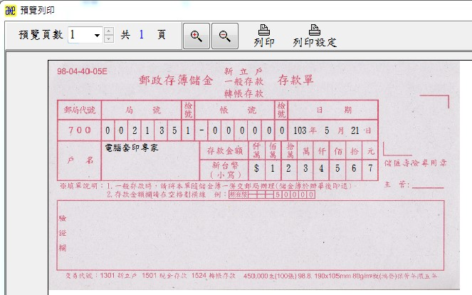
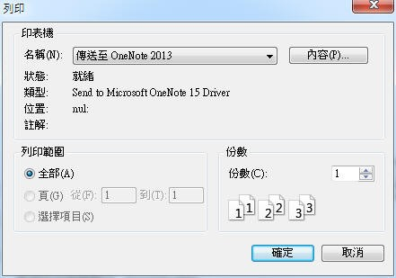

執行套印測試
第1次使用本軟體時，請進行下列套印測試，測試完成後，下次執行套印時，只要輸入數字代碼即可完成套印工作。
如果您要直接使用您想要套印的表格(例如支票)請至表格匯入匯出管理」取得您要執行套印的表格設定檔，如果找不到您需要的表格，請立即與我們聯絡，我們會提供您需要的表格套印功能。
- 準備測試：這裏將以郵局存款單作為測試說明，請先至郵局取得存款單5份，以利進行測試工作。
- 表格套印測試：請依下列步驟進行操作。
- 請確定您已看過「基本操作說明」。
- 啟動軟體：進入「表格套印管理系統」資料夾，執行FormPrint5.exe。系統即會進入「表格套印」功能
- 建立您的基本資料：請點選「資料管理>套印者管理」建立您的基本資料、銀行帳號等相關資料後離開。
- 請選擇表格來源：請選擇「700 臺灣郵股份有限公司」，並選擇存款單。
- 列印設定：
- 您可以先參閱 印表機的選擇 以及 印表機使用入門。
- 請進入「表格設計 > 列印設定 」以便設定印表機、列印紙張大小、邊界、列印方向等相關資料。每1種表格均需要各別指定印表機相關設定，才進行套印。
- 設定列印預覽：為便利測試工作，將列印預覽及底圖預覽打勾，使軟體在列印資料先進行預覽，再由您決定是否套印。正式套印時如果要加快套印速度，請不要設定列印預覽。
- 輸入套印資料：如圖1，記得每輸入完成後要按Enter鍵，以加快套印速度。
 圖1.輸入套印資料
圖1.輸入套印資料
- 列印：列印後如果位置、內容不正確，必需進行調整時，可參考Q&A常見問題排除 ，直至套印出正確內容。
- 預覽列印：(圖2)
- 列印：將資料印出來。
- 列印設定：可以暫時性指定印表機或設定列印範圍。(圖3)

圖2.預覽列印

圖3.列印設定視窗